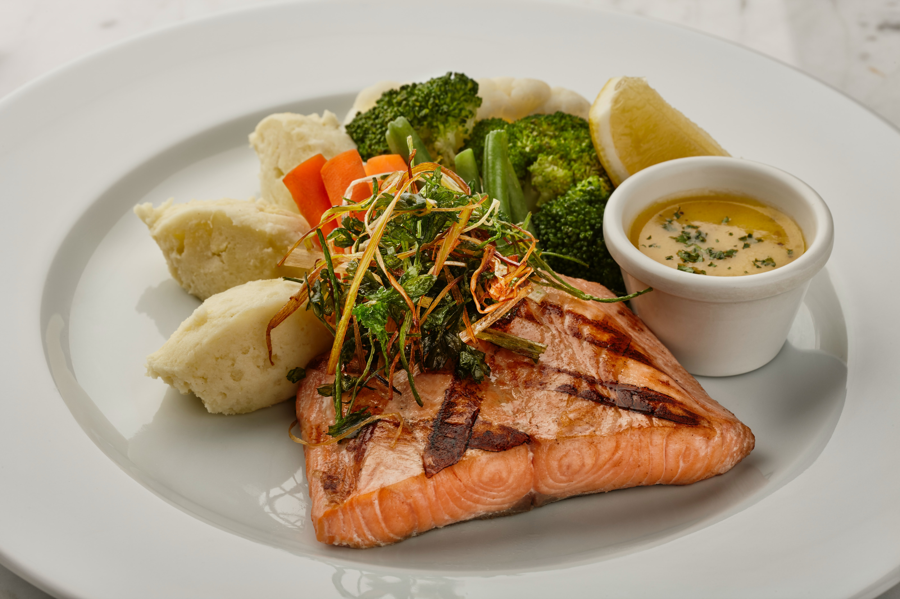

Discover the Flavors of The Scarf

Scarf Salad
A refreshing mix of baby greens, cherry tomatoes, cucumber, red onion, avocado, and crumbled feta cheese, tossed in a tangy vinaigrette dressing.
Classic Carbonara
Al dente spaghetti tossed with a creamy parmesan and egg yolk sauce, crispy bacon, and fresh parsley.
Grilled Salmon
A perfectly cooked salmon fillet drizzled with lemon butter sauce, served with roasted potatoes and seasonal vegetables.
